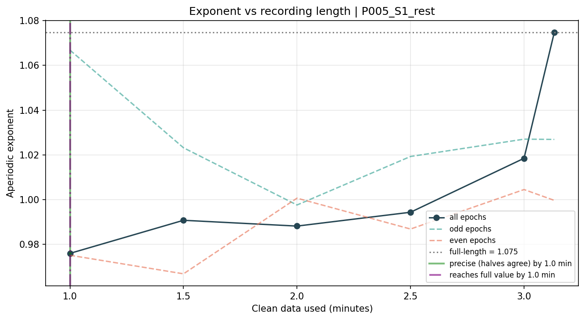

Subject P005_S1_rest · auto-generated per recording. Everything below is derived from this single .xdf file.
Looks clean.
| Participant | P005 |
| Session | 1 |
| Condition | rest |
| Subject id | P005_S1_rest |
| Source file | P005_S001_rest.xdf |
| Original duration (min) | 2.9999 |
| Clean minutes analysed | 3.1333 |
| AVERAGE aperiodic exponent | 1.05247 |
| Exponent SD across channels | 0.039214 |
| Average fit r^2 | 0.989296 |
| Channels averaged | 5 |


| epochs_before_qc | 199 |
| epochs_dropped_amp_flat | 1 |
| epochs_dropped_gradient | 1 |
| epochs_flagged_variance | 6 |
| epochs_flagged_muscle | 3 |
| epochs_final_clean | 188 |
| pct_epochs_rejected | 5.53 |
| pct_epochs_kept | 94.47 |
| High-pass (Hz) | 0.1 |
| Notch (Hz) | 60.0 |
| Montage | standard_1020 |
| Reference | ear |
| Interpolation | average |
| FOOOF range (Hz) | 1-40 |
| Aperiodic mode | fixed |
| Bad channels | C3;F4 |
| Interpolated | C3;F4 |
| Excluded | none |
| Exponent-flagged | none |
| Worst offender channel | C4 (45.45% of rejections) |
| channel | exponent | r^2 | log-var | reject hits | % of rejections | interp? | excluded? |
|---|---|---|---|---|---|---|---|
| F3 | 1.056199 | 0.995741 | -22.6647 | 3 | 27.27% | ||
| F4 | 1.00795 | 0.995661 | -22.518 | 2 | 18.18% | yes | |
| C3 | 1.00795 | 0.995661 | -22.5649 | 2 | 18.18% | yes | |
| C4 | 1.092974 | 0.983657 | -22.6498 | 5 | 45.45% | ||
| Cz | 1.080115 | 0.988516 | -22.64 | 0 | 0.0% | ||
| P3 | 1.053181 | 0.990053 | -22.6632 | 1 | 9.09% | ||
| P4 | 0.979879 | 0.988515 | -22.6681 | 2 | 18.18% |
Interpolated channels are reported but excluded from the AVERAGE exponent (a reconstructed channel is a blend of its neighbours, not an independent measurement).
Methods: aperiodic fit via FOOOF/specparam (Donoghue et al. 2020, Nat Neurosci); acquisition/rejection parameters per the Boere & Krigolson Xon protocol; preprocessing in MNE-Python. See docs/METHODS.md.